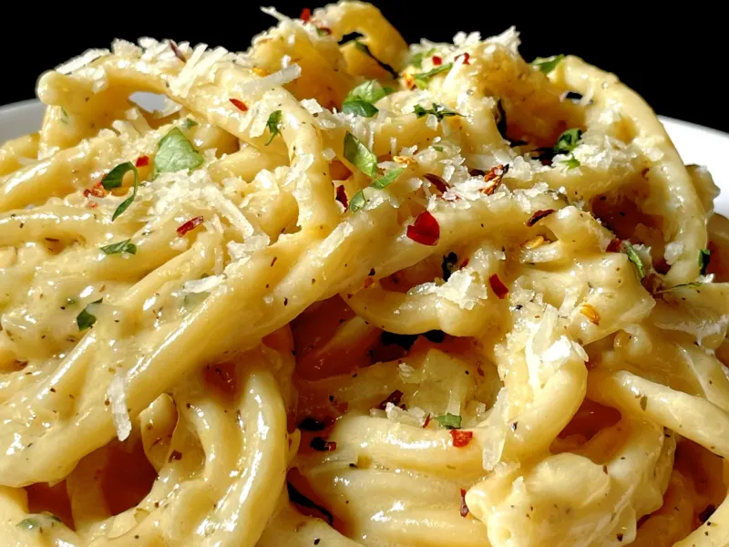

White Wine Bucatini

Description
A new favorite and recent discovery. Thank you TikTok.
Ingredients
- White Wine (Dry preferred)
- Bucatini
- Lemon
- Olive Oil
- Heavy Cream
- Red Pepper Flakes
- Lots of Garlic
- Lots of Parmesan
Steps
- Boil pasta for 5 mins or until al dente.
- Heat large pan on med heat
- Add garlic and red pepper flakes to pan and cook until fragrant
- Add white wine and bring to a boil
- Once boiling bring to a simmer and add flour, starchy pasta water and parmesan cheese.
- Stur sauce until it thickens.
- Add cooked noodles to sauce, add lemons and stir.
- Finally, plate and serve. Besk enjoyed with a glass of white wine. Buon apetito!
Back to Main Page